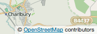

Please read these terms and conditions of use ("Terms of Use") carefully before you download or launch the wireless-device app Smartrek ("Smartrek") on your wireless device. Your use of Smartrek indicates that you accept these terms and conditions. If you do not accept these terms and conditions, do not download, launch or otherwise use Smartrek.
INTRODUCTION
These Terms of Use represent the agreement ("Agreement") between you and Metropia, Inc. ("Metropia") with respect to Smartrek. All references herein to "you" and "your" means you, your employees, agents, and contractors, and any other entity on whose behalf you accept these terms and conditions, all of whom shall also be bound by this Agreement.
Metropia may revise these terms and conditions at any time, with or without notice to you. You should visit www.smartrekmobile.com from time to time to review the then current terms and conditions for Smartrek.
SMARTREK
Smartrek allows you to obtain via your wireless device GPS-assisted navigation instructions to destinations throughout the available markets as specified in www.smartrekmobile.com, depending on your cellular carrier. Smartrek considers time of day, traffic, time of departure, route selection and other factors to provide various departure and route options for your trip. These departure time and route options may not be the departure times and route you often use. Smartrek awards points (“Trek Points”) to you if you (i) comply with the route provided, and (ii) depart at your reserved time. Trek Points have no monetary value, and can be redeemed only for prizes and awards offered by Metropia, as identified on its website. Metropia reserves the right to alter how Trek Points are calculated and awarded or to cease offering Trek Points altogether.
Smartrek is for your internal business and personal use and is not for resale or other transfer or disposition to any other person or entity.
Smartrek utilizes map and other data licensed to Metropia by third parties for the benefit of you and other end users. This Agreement includes end-user terms required by these companies (set forth at the end of this Agreement), and thus your use of Smartrek is limited by and subject to such terms.
YOUR LOCATION AND ROUTE INFORMATION
For Metropia to provide Smartrek and Trek Points, Metropia must record your route information, including your point of origin, the address of your destination, the starting time of your trip, and the route you are instructed to follow, and must periodically receive your GPS location.
In using Smartrek, you allow Metropia to access your GPS hardware and otherwise obtain this location and route information, and to record, compile and display such information. Such information is subject to Metropia's privacy policy located at www.smartrekmobile.com. Your use of Smartrek indicates that you accept the terms of Metropia's privacy policy.
SAFE AND LAWFUL USE OF SMARTREK
You agree to comply with the following when using Smartrek:
USE OF SMARTREK
Metropia does not guarantee that the route produced by Smartrek is always a physically or logically feasible route. In the event Smartrek suggests a route or turn that is either physically impossible or may violate traffic laws or convention, you should exercise good judgment and ignore such suggested route or turn. Metropia is not responsible for any damage, injury or fatality caused by following Smartrek recommended routes.
While you may exercise discretion to choose or not choose the reserved departure time and route, Trek Points associated with each reserved departure time and route will be awarded to you only if you successfully complete the reserved route within the planned departure time. In the event of an event beyond your or Metropia’s control that causes you to be unable to start and/or finish the planned trip at the reserved time, Metropia is not responsible for awarding you the reserved Trek Point associated with the route.
The method of how Trek Points are calculated is dynamic and may be updated or changed by Smartrek’s internal rules and algorithms and/or at Metropia’s discretion. Metropia does not release its internal calculation rules to any user.
You can redeem Trek Points only in accordance with the Smartrek guidelines set forth on the Smartrek website. Availability of prizes, and the type, quality, quantity and type of prize available, is subject to change and availability. Metropia has the right to change or modify the Trek Point redemption rules and policies at any time without giving prior notice to you.
TELEPHONE/DATA CHARGES
You are responsible for any fees assessed by your wireless telephone carrier to access Smartrek, including any data plan charges, toll, out-of-area, roaming, or other telephone connection charges. Standard messaging rates and other charges may apply when using certain features in Smartrek.
TERMINATION
Metropia reserves the right to terminate your access to Smartrek at any time for any or no reason and without notice to you.
You may terminate Smartrek at any time by notifying Metropia via: (i) an email addressed to webmaster@smartrekmobile.com. Any such cancellation by you shall become effective upon Metropia's receipt of your notice.
In the event of any such termination, you must:
All terms and conditions which by their nature or their terms should survive termination or expiration of this Agreement, including without limitation all statements of ownership, all disclaimers of warranties and all limitations of liability, shall so survive.
ACCOUNT INFORMATION
You agree: (a) when signing up for Smartrek, to provide Metropia with true, accurate, current, and complete information about yourself, and (b) to inform Metropia promptly of any changes to such information to keep it true, accurate, current and complete.
If you provide Metropia with any information that is untrue, inaccurate, not current or incomplete, or Metropia has reasonable grounds to suspect so, Metropia has the right to suspend or terminate your access to Smartrek.
All of your account information, as well as other payment and personal information provided by you to Metropia, is subject to Metropia's privacy policy located at www.smartrekmobile.com. Your use of Smartrek indicates that you accept the terms of Metropia's privacy policy.
SOFTWARE LICENSE
Subject to your compliance with the terms of this Agreement, Metropia hereby grants to you a personal, non-exclusive, non-transferable license to: (i) download or otherwise copy the Software onto your wireless device, and (ii) use the Software (in object code form only) on such wireless device in order to access and use Smartrek.
This license shall terminate upon any termination of this Agreement, or upon any suspension, termination or cancellation of your access to Smartrek.
You agree not to do any of the following:
OWNERSHIP & COPYRIGHT
Title, ownership rights and intellectual property rights in and to the Software and all copies thereof shall remain with Metropia or Metropia’s licensors or suppliers (as applicable). You do not have or shall not gain any proprietary interest in the Software (including any modifications or copies made by or for you) or any related intellectual property rights. Title and related rights in the content accessed through the Software is the property of the applicable content owner and may be protected by applicable law. This license gives you no rights to such contents. The Software is protected by U.S. and international copyright laws and conventions as well as other intellectual property laws and treaties. The Software is licensed, not sold, and Metropia reserves all rights in the Software not expressly granted to you in this Agreement.
This Agreement does not grant to you any rights in connection with any trademarks or service marks of Metropia or of Metropia’s licensors or suppliers.
DISCLAIMERS
TO THE FULLEST EXTENT PERMISSIBLE PURSUANT TO APPLICABLE LAW, IN NO EVENT WILL METROPIA, ITS LICENSORS AND SUPPLIERS, OR AGENTS OR EMPLOYEES OF ANY OF THE FOREGOING, BE LIABLE FOR ANY DECISION MADE OR ACTION TAKEN BY YOU OR ANYONE ELSE IN RELIANCE ON THE INFORMATION PROVIDED BY SMARTREK OR THE SOFTWARE. YOU ARE RESPONSIBLE FOR THE ENTIRE RISK ARISING OUT OF YOUR USE OF SMARTREK AND THE SOFTWARE. SUGGESTED ROUTES AND DIRECTIONS PROVIDED BY SMARTREK ARE CONSIDERED AS REFERENCE INFORMATION TO USERS THAT MAY NOT BE ACCURATE OR COMPLETE.
SMARTREK AND THE SOFTWARE ARE PROVIDED "AS IS" AND WITHOUT WARRANTIES OF ANY KIND EITHER EXPRESS OR IMPLIED. METROPIA DISCLAIMS ALL WARRANTIES, EXPRESS OR IMPLIED, INCLUDING, BUT NOT LIMITED TO, IMPLIED WARRANTIES OF MERCHANTABILITY AND FITNESS FOR A PARTICULAR PURPOSE.
Applicable law may not allow certain warranty exclusions, so one or more of the above disclaimers may not apply to you.
OTHER QUALIFICATIONS
You understand and agree that the Software is downloaded to your wireless device at your own discretion and risk and that you will be solely responsible for any damages to your wireless device, or loss of data, that results from the download of such software.
Metropia does not warrant that Smartrek or the Software will not infringe on third party intellectual property rights.
Metropia also does not warrant that your use of Smartrek will be uninterrupted or error-free. Rather, temporary interruptions of Smartrek may occur from time to time (such as when you drive into an area that has no cell phone coverage or when Smartrek or your carrier's network is undergoing maintenance). Metropia will exercise reasonable efforts to attempt to limit or prevent such occurrences, but in no event will Metropia be liable for any financial or other damages due to such interruptions, including without limitation any failure to accurately calculate or reward Trek Points.
Metropia also does not warrant the accuracy of the map or other data used for Smartrek. Such data may not always reflect reality due to, among other things, road closures, construction, weather, new roads and other changing conditions.
Metropia has technological and operational security policies and procedures to protect your information from loss, misuse, alteration, or unintentional destruction, but Metropia makes no representations or warranties regarding the security of Smartrek or the transmission of data or information to and from Metropia and your wireless device. Metropia will not be liable to you or anyone else in the event of any unauthorized infiltration of any of its systems.
LIMITATION OF LIABILITY
TO THE EXTENT PERMITTED UNDER APPLICABLE LAW, UNDER NO CIRCUMSTANCES SHALL METROPIA OR ITS LICENSORS (OR THEIR LICENSORS AND SUPPLIERS) BE LIABLE TO YOU OR ANYONE ELSE FOR ANY LOSS, INJURY, OR DAMAGES (INCLUDING BUT NOT LIMITED TO ANY COMPENSATORY, PUNITIVE, SPECIAL, INCIDENTAL, INDIRECT, EXEMPLARY OR CONSEQUENTIAL DAMAGES) ARISING OUT OF OR IN CONNECTION WITH THE USE BY YOU OR ANYONE ELSE OF SMARTREK OR THE SOFTWARE, ANY DEFECTS IN SMARTREK OR THE SOFTWARE, OR ANY BREACH OF THIS AGREEMENT, EVEN IF METROPIA OR ITS LICENSORS HAVE BEEN ADVISED OF THE POSSIBILITY OF SUCH DAMAGES.
Applicable law may not allow the limitation or exclusion of liability or incidental or consequential damages, so the above exclusion may not apply to you.
INDEMNIFICATION
To the extent permitted by applicable law, you agree to indemnify, defend and hold Metropia and its licensors (including their respective licensors, suppliers, assignees, subsidiaries, affiliated companies, and the respective officers, directors, employees, shareholders, agents and representatives of each of them) free and harmless from and against any liability, loss, injury (including injuries resulting in death), demand, action, cost, expense, or claim of any kind or character, including but not limited to attorney's fees, arising out of or in connection with your use of Smartrek or the Software.
ARBITRATION AND GOVERNING LAW
You agree that any dispute, claim or controversy arising out of or relating to this Agreement, Smartrek, the Software or your use thereof, shall be settled by independent arbitration involving a neutral arbitrator and administered by the American Arbitration Association. The arbitrator shall apply the Commercial Arbitration Rules of the American Arbitration Association, and the judgment upon the award rendered by the arbitrator may be entered by any court having jurisdiction. Note that there is no judge or jury in an arbitration proceeding and the decision of the arbitrator shall be binding upon both parties.
This Agreement and performance hereunder will be governed by and construed in accordance with the laws of the State of Arizona, without giving effect to its conflict of laws provisions. You agree to submit to the exclusive jurisdiction of the courts of the County of Pima, Arizona.
MISCELLANEOUS
This Agreement constitutes the entire agreement between Metropia and you with respect to the subject matter hereof. Metropia's or your failure to require performance of any provision shall not affect that party's right to require performance at any time thereafter, nor shall a waiver of any breach or default of this Agreement constitute a waiver of any subsequent breach or default or a waiver of the provision itself.
If any provision herein is held unenforceable, then such provision will be modified to reflect the intention of the parties, and the remaining provisions of this Agreement will remain in full force and effect.
You may not resell, assign, or transfer any of your rights hereunder. Any such attempt may result in termination of this Agreement, without liability to Metropia. Notwithstanding the foregoing, Metropia may assign this Agreement to any affiliate or successor at any time without notice.
If you are an agency, department, or other entity of the United States Government, funded in whole or in part by the United States Government, or an employee of any of the foregoing, then use, duplication, reproduction, release, modification, disclosure or transfer of this commercial product and accompanying documentation, is restricted in accordance with the LIMITED or RESTRICTED rights as described in DFARS 252.227-7014(a)(1) (JUN 1995) (DOD commercial computer software definition), DFARS 227.7202-1 (DOD policy on commercial computer software), FAR 52.227-19 (JUN 1987) (commercial computer software clause for civilian agencies), DFARS 252.227-7015 (NOV 1995) (DOD technical data – commercial items clause); FAR 52.227-14 Alternates I, II, and III (JUN 1987) (civilian agency technical data and noncommercial computer software clause); and/or FAR 12.211 and FAR 12.212 (commercial item acquisitions), as applicable. In case of conflict between any of the FAR and DFARS provisions listed herein and these Terms of Use, the construction that provides greater limitations on the Government's rights shall control.
You represent and warrant that: (i) you are not located in a country that is subject to a U.S. Government embargo, or that has been designated by the U.S. Government as a “terrorist supporting” country; and (ii) you are not listed on any U.S. Government list of prohibited or restricted parties. You must comply with applicable third party terms of agreement when using the Software.
By using Smartrek, you consent to receive from Metropia all communications, including notices, agreements, legally required disclosures or other information in connection with Smartrek (collectively, "Notices") electronically. Metropia may provide such Notices by posting them on Metropia's website or by downloading such Notices to your wireless device. If you desire to withdraw your consent to receive Notices electronically, you must discontinue your use of Smartrek. Metropia may email or send text messages to you from time to time to inform you about our products and services that we think will interest you, unless you inform us that you opt out from receiving such communications.
If you have any questions regarding the terms of this Agreement, please contact Metropia by sending an email to webmaster@smartrekmobile.com.
END-USER TERMS REQUIRED BY OPEN STREET MAP
Smartrek utilizes software licensed to Metropia by OpenStreetMap ("OSM"). You may use this software (the "OSM Software") through Smartrek subject to the following terms and conditions:
OpenStreetMap is open data, licensed under the Open Data Commons Open Database License (ODbL).
You are free to copy, distribute, transmit and adapt our data, as long as you credit OpenStreetMap and its contributors. If you alter or build upon our data, you may distribute the result only under the same license.
The cartography in our map tiles, and our documentation, are licensed under the Creative Commons Attribution-ShareAlike 2.0 license (CC-BY-SA).
How to credit OpenStreetMap
We require that you use the credit “© OpenStreetMap contributors”.
You must also make it clear that the data is available under the Open Database License, and if using our map tiles, that the cartography is licensed as CC-BY-SA. You may do this by linking to this copyright page. Alternatively, and as a requirement if you are distributing OSM in a data form, you can name and link directly to the license(s). In media where links are not possible (e.g. printed works), we suggest you direct your readers to openstreetmap.org (perhaps by expanding 'OpenStreetMap' to this full address), to opendatacommons.org, and if relevant, to creativecommons.org.
For a browsable electronic map, the credit should appear in the corner of the map. For example:

Finding out more
Read more about using our data, and how to credit us, at the Legal FAQ.
Although OpenStreetMap is open data, we cannot provide a free-of-charge map API for third-party developers. See our API Usage Policy, Tile Usage Policy and Nominatim Usage Policy.
Our contributors
Our contributors are thousands of individuals. We also include openly-licensed data from national mapping agencies and other sources, among them:
For further details of these, and other sources that have been used to help improve OpenStreetMap, please see the Contributors page on the OpenStreetMap Wiki.
Inclusion of data in OpenStreetMap does not imply that the original data provider endorses OpenStreetMap, provides any warranty, or accepts any liability.
Copyright infringement
OSM contributors are reminded never to add data from any copyrighted sources (e.g. Google Maps or printed maps) without explicit permission from the copyright holders.
If you believe that copyrighted material has been inappropriately added to the OpenStreetMap database or this site, please refer to our takedown procedure or file directly at our on-line filing page.
END-USER TERMS REQUIRED BY APPLE INC.
YOUR USE OF SMARTREK IS AT YOUR SOLE RISK. LOCATION DATA MAY NOT BE ACCURATE.
Effective as of April 1, 2013